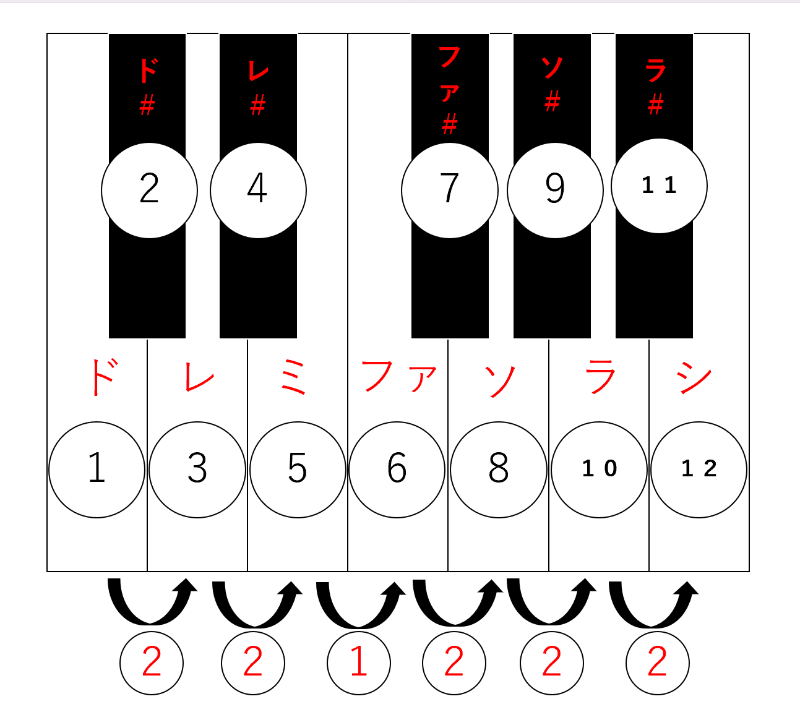

【座学やってみた】作曲のお勉強DAY Part1
こんにちはreiです!
今回は作曲のお勉強をしていきます!
作曲の大まかな流れ
第一段階
- メロディーを作る
- コード進行を作る
- 歌詞を作る
- リズムパートを作る
- 音程楽器パートを作る
第二段階
- 1.ボーカル仕込み（レコーディング）
- 2.音のバランスを整える（ミックス）
- 3.最終的な音量を整える（マスタリング）
第一段階を作るのに必要なスキル
- スケール
- ダイアトニックコード
- ディグリーネーム
- 定番のコード進行
- 楽器種ごとの代表的フレーズ
1.スケール
◎スケール：ド・ド#・レ・レ#・ミ・ファ・ファ#・ソ・ソ#・ラ・ラ#・シ の12音の中から組み合わせること。
※ドレミを英語で表すと： C（ド）・D（レ）・E（ミ）・F（ファ）・G（ソ）・A（ラ）・B（シ）
メジャースケール（長調）
メジャースケール（長調）
→12音のうち7音を選ぶ（選ばなかった他の5音は、たまにアクセントで使うくらいでほぼ使わない）
例）Cメジャースケール（ハ長調）
→ド・レ・ミ・ファ・ソ・ラ・シ
音の間隔が2・2・1・2・2・2
イメージ図

例）マイナースケール（短調）
Cマイナースケール（ハ短調）
→ド・レ・レ#・ファ・ソ・ソ#・ラ#
音の間隔が2・1・2・2・1・2
スケールの選び方
- ボーカルの歌える音程範囲に合わせて設定する
- ギターやベースなど、演奏できる音程に限界がある楽器に合わせて設定する
2.ダイアトニックコード
◎ダイアトニックコード
→長(短)調に対応する7つのコード
例）ハ長調(Cメジャースケール)
C（ド） Dm(レm) Em(ミm) F(ファ) G(ソ) Am(ラm) Bm-5(シm) ※mはマイナーコード・-5はフラット
のようなコード進行。
何でC(ド)のようなメジャーコードとDm(レm)のようなマイナーコードが混在するのか？
→仮にD(メジャー)だとレ・ファ#・ラのように#が付いてしまう。
しかし、この例のCメジャースケールの構成はド・レ・ミ・ファ・ソ・ラ・シ のため、#はついては言えないため、その調節でm(マイナー)が付く。法則:どのダイアトニックコードでも2・3・6・7番目(今回でいうレ・ミ・ラ・シ)はm(マイナー)になる！
3.ディグリーネーム
◎ディグリーネーム
→コードの表記を「C・F・Am」のようなアルファベットではなく、「1・4・6m」のような数字で表記すること
例）Cメジャースケールのコード(上のダイアトニックコードの欄を参照)
C・Dm・Em・F・G・Am・Bm-5
↓ディグリーネームに変えると
1・2m・3m・4・5・6m・7m-5
のようになる。
疲れたんでやめま～す